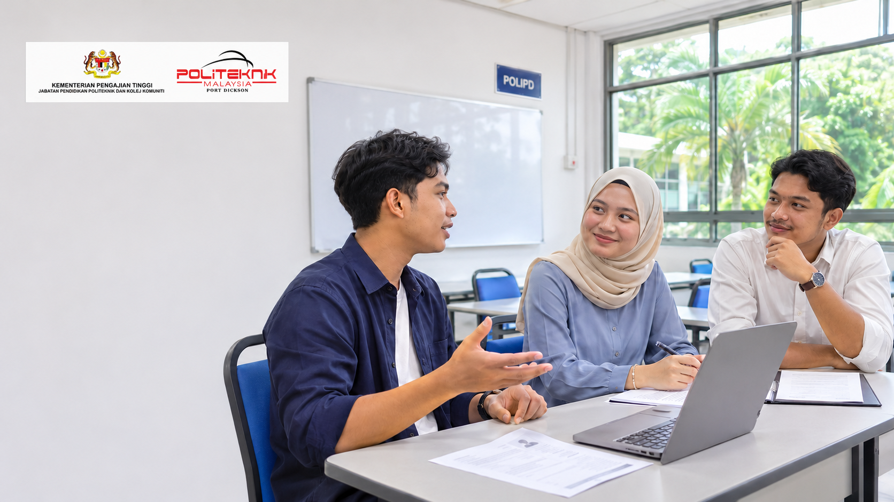

CLO 1: Fahami Iklan Jawatan
Tafsir keperluan dalam iklan jawatan dengan tepat.
Laman pembelajaran
Pelajari kemahiran mencari kerja, sediakan dokumen permohonan dan bina keyakinan menghadapi temu duga.
Mula belajar
Communicative English 3 ialah kursus 2 kredit untuk pelajar DPR Semester 3, Tahun 2. Anda akan belajar mencari peluang pekerjaan, memahami syarat jawatan, membuat pertanyaan kerja serta menyediakan resume, resume video dan surat permohonan. Kursus ini turut membina kemahiran komunikasi untuk temu duga dan menyokong pencapaian sekurang-kurangnya tahap B2 CEFR.
Tafsir keperluan dalam iklan jawatan dengan tepat.
Hasilkan resume, resume video dan surat permohonan yang menyerlahkan kompetensi serta kekuatan mengikut jangkaan majikan.
Tunjukkan kemahiran komunikasi dan sosial yang berkesan semasa mengendalikan temu duga.
Minggu 1–3
Kenal pasti iklan yang sesuai, fahami syarat jawatan dan istilah pekerjaan. Pelajari cara membuat pertanyaan serta mengatur atau menjadualkan semula temu duga secara profesional.
Minggu 4–7
Susun maklumat yang relevan, tonjolkan kekuatan dan semak ketepatan bahasa. Rancang kandungan serta skrip untuk menghasilkan resume video.
Minggu 8–10
Gunakan format surat atau e-mel rasmi. Susun kelayakan, pengalaman dan kekuatan diri dengan jelas. Semak tatabahasa, ejaan serta kesilapan menaip.
Minggu 11–14
Sediakan pengenalan diri dan dokumen sokongan. Kaji latar belakang syarikat, latih jawapan dan sediakan soalan yang relevan untuk majikan.
Pentaksiran bagi topik kemahiran mencari kerja.
Sediakan resume yang menyerlahkan kelayakan, kompetensi dan kekuatan diri.
Hasilkan resume video untuk memperkenalkan kemahiran dan kelayakan secara profesional.
Sediakan surat permohonan kerja menggunakan format dan bahasa yang sesuai.
Tunjukkan komunikasi yang berkesan dan keyakinan semasa simulasi temu duga.
Pentaksiran berterusan menyumbang 100% markah kursus. Semua pentaksiran dilaksanakan secara individu.
Buka bahan untuk dibaca atau muat turun sebagai rujukan.
Bahan rujukan DUE50132.
Bahan rujukan DUE50132.
Bahan rujukan DUE50132.
Bahan rujukan DUE50132.
Perlukan penjelasan tentang topik atau tugasan? Hubungi pensyarah kursus: Julie Marlina binti Hasan, Masniza binti Mansor atau Noor Fazreena binti Abdul Wahab. E-mel rasmi: (isi di sini).